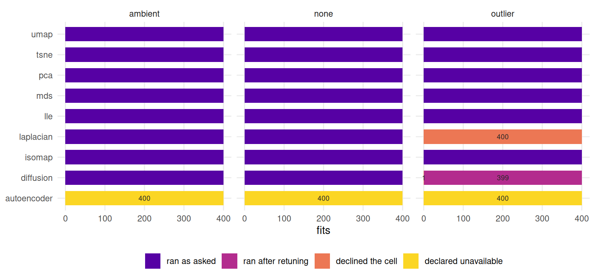
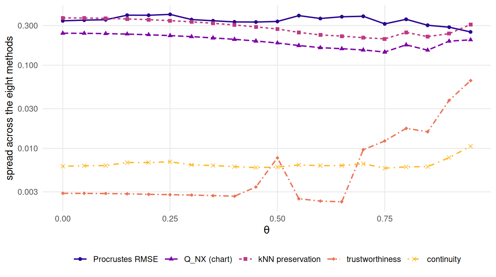

10 Benchmark results
Which method survives — and can the benchmark tell?
10.1 What this chapter answers
Part II fitted each method to a folded sheet one configuration at a time. This chapter fits all of them to the whole sweep at once — every method against every fold angle under every noise model, twenty seeds deep — and reads the table.
It asks two questions, in a fixed order, and the order is the argument. The first is whether the benchmark can tell the methods apart at all: whether the spread across methods exceeds the spread across repeated runs within one method. Only if it does is the second question — which method wins — about methods rather than about seeds. A benchmark that answers the second without checking the first publishes a ranking of its own noise.
The short answer to the first is yes, everywhere on this grid, by a margin that narrows sharply where the sheet is most folded. The answer to the second is that it depends on \(\theta\) and on the noise model, so that “method X is best” is not a well-formed sentence here unless both are stated. The rest is those two answers with their conditions attached, and a rule — fixed in code before the grid existed — for turning them into a decision.
10.2 Setup
grid <- read_run("data/processed/benchmark-grid.rds", "2483a468d82d4d64")
prov <- attr(grid, "provenance")
ok <- grid[grid$ran, ]The grid is committed, not computed at render time. read_run() refuses any
file whose contents differ from the run these numbers were read off, so a
regenerated artefact is a build failure rather than a silently changed sentence.
Producing it took 4.9 hours of wall clock across
4 forked workers — 19.6
core-hours for 9,199 fits, or about
59
core-seconds per sampled cell, metrics included.
grid keeps every row the producer wrote, including the ones with no metrics;
ok is the subset that fitted. Both are used below, and which one a number came
from is stated, because the difference between them is itself a result.
10.3 What the grid holds
step <- unique(round(diff(sort(unique(grid$theta))), 10))
design <- data.frame(
Factor = c("pattern", "$\\theta$", "noise", "method", "seed", "cells", "rows"),
Levels = c(length(unique(grid$pattern)), length(unique(grid$theta)),
length(unique(grid$noise)), length(unique(grid$method)),
length(unique(grid$seed)),
nrow(unique(grid[, c("pattern", "theta", "noise", "seed")])),
nrow(grid)),
Value = c(paste(unique(grid$pattern), collapse = ", "),
sprintf("%s to %s in steps of %s", min(grid$theta), max(grid$theta), step),
paste(sort(unique(grid$noise)), collapse = ", "),
paste(sort(unique(grid$method)), collapse = ", "),
sprintf("%d to %d", min(grid$seed), max(grid$seed)),
"pattern $\\times$ $\\theta$ $\\times$ noise $\\times$ seed",
"one per method per cell"))
knitr::kable(design, align = "lrl", caption = "The benchmark grid, read off the artefact rather than asserted.")| Factor | Levels | Value |
|---|---|---|
| pattern | 1 | miura |
| \(\theta\) | 20 | 0 to 0.95 in steps of 0.05 |
| noise | 3 | ambient, none, outlier |
| method | 9 | autoencoder, diffusion, isomap, laplacian, lle, mds, pca, tsne, umap |
| seed | 20 | 1001 to 1020 |
| cells | 1200 | pattern \(\times\) \(\theta\) \(\times\) noise \(\times\) seed |
| rows | 10800 | one per method per cell |
There is no pattern axis. One family folds (Chapter 8), and a factor with a single level is not a factor. The three noise conditions are a clean sheet, isotropic ambient jitter, and a sparse outlier contamination; the \(\theta\) sweep stops short of the flat-folded state, where the sheet has no extent in one direction and every method is embedding a degenerate object.
n_unavail <- sum(grid$status == "unavailable")
n_declined <- sum(grid$status == "declined")
run_rate <- tapply(grid$ran, grid$method, mean)
fate <- factor(ifelse(!grid$ran,
ifelse(grid$status == "unavailable", "declared unavailable",
"declined the cell"),
ifelse(is.na(grid$tuning), "ran as asked", "ran after retuning")),
levels = c("ran as asked", "ran after retuning",
"declined the cell", "declared unavailable"))
max_floor <- max(grid$floor)Of 10,800 rows, 9,199
carry metrics. The remaining 1,601
are results, not gaps: 1,200 autoencoder rows
declared unavailable by the registry until Chapter 7, and
401 rows where a method was offered a cell and returned nothing.
report_failures() prints the same accounting from the producer.
The floor column is 0 in every row. The irreducible loss of a
\(p\)-dimensional chart embedded in \(d\) dimensions is the tail of the chart’s
spectrum, and here the chart is two-dimensional and \(d\) is 2, so
there is no tail. Every error reported below is therefore loss the method is
responsible for, and “scored against what was achievable” and “scored in
absolute terms” coincide on this grid. They do not coincide on the product
construction of Chapter 8, which is the artefact built to make
the floor positive.

Figure 10.1: What happened to every fit, by method and noise condition. Counts are printed on each segment that is not a clean run, so nothing here is carried by colour alone.
Figure 10.1 shows where the losses sit, and they are
structured rather than scattered. Laplacian eigenmaps declined every outlier
cell; the diffusion map ran under outliers only after widening its own kernel
bandwidth, which the tuning column records.
10.4 Where the benchmark has resolving power
A ranking is worth reading only if the differences it orders are larger than the
noise it was measured through. R/selection.R names that quantity and fixes it
in code:
\[R \;=\; \frac{\text{spread across methods}}{\text{spread within a method, across seeds}},\]
with both spreads taken of the same quantity — excess over the irreducible floor — so that \(R\) is dimensionless. The numerator is the standard deviation of the per-method means in a regime; the denominator is the median, over cells, of the seed-wise standard deviation inside one cell. Above one, the methods differ by more than a rerun of the same method does. At or below one, any ordering read off the grid is seed noise with a rank imposed on it.
rp <- do.call(rbind, lapply(sort(unique(grid$noise)), function(nz)
do.call(rbind, lapply(THETA_GRID, function(t) {
s <- select_method(grid, theta = t, noise = nz)$resolving
data.frame(noise = nz, theta = t, R = s$R, between = s$between, within = s$within)
}))))
worst <- rp[which.min(rp$R), ]
pooled_sd <- tapply(ok$rmse, interaction(ok$method, ok$theta, ok$noise, drop = TRUE),
stats::sd)
ends <- function(nz) round(rp$R[rp$noise == nz][c(1L, length(THETA_GRID))], 1)Three details of that definition earn their keep. The denominator is within a cell, not within a method across the regime, because a method’s variation from one fold angle to the next is difficulty and belongs in the numerator. It is a median rather than a mean, because one wildly unstable method would otherwise set the noise level for all eight — the pooled within-cell spread on this grid has a median of 0.019 and a maximum of 0.31, and the gap between those two is t-SNE. And it is computed on excess over the floor rather than on raw error, which on this grid changes nothing because the floor is 0, and on Chapter 8’s product suite changes a great deal.
![A line chart with the folding parameter on the horizontal axis and resolving power on a logarithmic vertical axis. Three lines, distinguished by colour, line style and point shape. The outlier line sits highest, near fifteen, falling gently to about nine at the right. The clean and ambient-noise lines run between three and seven across most of the range and fall towards the right-hand end, the ambient line reaching about one and a third at the largest fold angle. A dotted horizontal line marks one; no line touches it.](10-benchmark-results_files/figure-html/results-fig-resolving-1.png)
Figure 10.2: Resolving power against the folding parameter, one line per noise condition, on a logarithmic scale. The dotted line is the pre-registered floor below which the selection rule declines to rank anything.
\(R\) is above the floor of 1 in all 60 regimes of Figure 10.2. The chapter was specified to report \(R < 1\) wherever it held, and on this grid it holds nowhere; that is the finding, and it is a more comfortable one than the specification expected. The weakest cell is ambient noise at \(\theta = 0.95\), where \(R = 1.33\) — the between-method spread of 0.031 against a within-method spread of 0.023. Two ticks of \(\theta\) earlier the same condition resolves twice as well. The outlier condition resolves best of the three, by an order of magnitude, and that is not a compliment to the benchmark: it separates the methods there because one of them fails completely, which is a wide gap rather than an informative one.
The trend across the sweep is the part worth carrying forward. Every condition loses resolution as the sheet closes — from 6.5 to 2.3 on the clean sheet, 4.3 to 1.3 under ambient noise, 15.6 to 9.3 under outliers — so the benchmark is least able to discriminate exactly where its geometry is most distinctive. That is not a paradox: at large \(\theta\) every method is failing, and methods that are all failing look alike. It does mean that a regime chosen for being difficult is a regime chosen for weak resolving power, and Chapter 12 has to pick one knowing that.
The number to resist is the seed count. \(R\) is a ratio of two spreads and
neither is a standard error, so running forty seeds instead of twenty estimates
both more precisely and moves the ratio nowhere; tests/testthat/test-selection.R
demonstrates exactly that. Raising the seed budget until something separates
would be the same abuse as raising it until a \(p\)-value falls, with the
advantage of looking like diligence. The budget was fixed in advance and is
reported in the design table above.
Two things this section does not establish. It does not show that a crease pattern discriminates better than a classical benchmark: Chapter 11 measures that directly and finds the opposite, which is why this book’s spine is the irreducible-loss bound and not the claim that folded sheets are a harder test. And \(R\) is a property of a regime, not of the generator — it is computed here at fixed \(n\), fixed \(k\) and one pattern size, and each of those moves it.
10.5 Results
![Three panels labelled linear, geodesic and neighbour, each plotting reconstruction error against the folding parameter from zero to nearly one. In the linear panel a single visible curve rises smoothly from zero to about a fifth, with a very narrow band. In the geodesic panel Isomap runs almost flat near zero until roughly two-thirds of the way along and then rises, while the diffusion map sits near a fifth throughout. In the neighbour panel LLE rises from below a tenth to above four tenths, Laplacian eigenmaps and UMAP run flat near a quarter, and t-SNE sits highest with a very wide seed band.](10-benchmark-results_files/figure-html/results-fig-headline-1.png)
Figure 10.3: Normalised Procrustes reconstruction error against the folding parameter on the clean sheet, grouped by what each method consumes. The line is the mean over twenty seeds; the band is the full seed range. PCA and classical MDS coincide exactly and plot on top of each other.
mm <- aggregate(rmse ~ method + theta + noise, ok, mean)
mm$rank <- ave(mm$rmse, mm$theta, mm$noise, FUN = rank)
mm$label <- vapply(mm$method, function(m) METHOD_REGISTRY[[m]]$label, character(1))
lead <- do.call(rbind, lapply(split(mm, list(mm$theta, mm$noise)), function(s)
data.frame(theta = s$theta[1], noise = s$noise[1], best = s$method[which.min(s$rmse)])))
cross <- min(lead$theta[lead$noise == "none" & lead$best == "isomap"])
at <- function(m, i, nz = "none") {
mm$rmse[mm$method == m & mm$noise == nz & mm$theta == THETA_GRID[i]]
}
iso_rank <- mm$rank[mm$method == "isomap" & mm$noise == "outlier" &
mm$theta %in% THETA_GRID[c(1L, length(THETA_GRID))]]
qq <- aggregate(qnx ~ method + theta, ok[ok$noise == "none", ], mean)
qq <- qq[order(qq$theta), ]
q_cross <- min(qq$theta[qq$method == "isomap"][
qq$qnx[qq$method == "isomap"] > qq$qnx[qq$method == "pca"]])
sd_by <- function(m) {
s <- ok[ok$method == m, ]
median(tapply(s$rmse, interaction(s$theta, s$noise, drop = TRUE), stats::sd))
}Figure 10.3 is the headline on the clean sheet. At \(\theta = 0\) the sheet is the chart, and the linear pair recovers it to 4.9e-16 while Isomap — which consumes geodesics it must first estimate — pays 0.024 for the estimation (6,22). The linear error then climbs monotonically with the fold, because folding is a strict ambient contraction and a linear map cannot undo one, while Isomap’s stays nearly flat: its assumption is satisfied exactly on a rigid folding, and the geodesics it estimates do not change as the sheet closes.
The two curves cross. Isomap takes the lead at \(\theta = 0.4\) — 0.025 against 0.024 one step earlier, 0.026 against 0.031 at the crossing — and holds it to the end of the sweep, finishing at 0.188 against 0.212. Averaging over \(\theta\) would name the linear pair, because 8 of the 20 fold angles fall on the flat side of the crossing and the errors there are small. That average is a statement about the grid’s design, not about the methods.
The crossing moves when the metric does. This book reports two headline numbers per cell, deliberately: Procrustes RMSE asks whether the embedding is the chart, and chart-referenced \(Q_{NX}\) asks only whether it has the chart’s neighbourhoods, which any diffeomorphism of the plane preserves. Read against \(Q_{NX}\), Isomap does not pass the linear pair until \(\theta = 0.6\) — 0.920 against 0.917 — four steps of the sweep later than under RMSE. The gap between the two crossings is the distance between “the linear projection is still the better map” and “it is still the better neighbour list”, and naming a winner without naming the metric hides it.
The other five methods break rather than cross. LLE (30) starts respectably at 0.077 and ends at 0.439, worse than anything else on the clean sheet at the deepest fold: its local weights are fitted to neighbourhoods that folding has brought into contact across facets. The diffusion map and Laplacian eigenmaps are flat and mediocre throughout, averaging 0.204 and 0.236, which is roughly what a method that recovers the chart up to an unknown nonlinear warping scores against a metric permitting only similarity. And t-SNE averages 0.387 and is last at every fold angle — not a finding about t-SNE, which was never built to reproduce distances, but the clearest case on this grid of a method scored against a target it does not consume.
![Three panels, one per noise condition, with the folding parameter on the horizontal axis and rank from one at the top to eight at the bottom; the outlier panel has seven ranks because Laplacian eigenmaps produced no embedding there. Under no noise and under ambient noise PCA and classical MDS alternate between ranks one and two at small fold angles and Isomap takes rank one from roughly two-fifths of the way along. Under outlier noise UMAP holds rank one across the whole sweep, the diffusion map is last throughout, and Isomap climbs only from fourth place to third at large fold angles.](10-benchmark-results_files/figure-html/results-fig-order-1.png)
Figure 10.4: Rank by mean reconstruction error against the folding parameter, one panel per noise condition. Rank one is at the top. The leader changes with the fold angle under two conditions and is a different method entirely under the third.
Figure 10.4 puts the three noise conditions side by side, and the third one breaks the story the first two tell. Under sparse outliers UMAP (8) leads at every fold angle, at 0.353 against 0.422 for the linear pair, while the diffusion map (27) sits at 0.999 — which is the score of an embedding that explains none of the chart’s variance — and Laplacian eigenmaps (28) does not produce one at all. Isomap’s advantage at large \(\theta\) survives as a climb from 4th place to 3rd, but UMAP leads at all 20 fold angles and Isomap never reaches the top under this contamination.
So the ordering is not a property of the methods. It is a property of (method, \(\theta\), noise), and any of the three sentences “the linear methods win”, “Isomap wins” and “UMAP wins” can be read off this one grid.
10.6 Diagnostics

Figure 10.5: How far apart the metrics place the eight methods, on the clean sheet: the range of the per-method means at each fold angle, on a logarithmic scale.
Four things in the table are worth naming before anyone reads a ranking off it.
PCA and classical MDS are the same map here. Their reconstruction errors differ by at most 2.8e-15 across the grid and their \(Q_{NX}\) scores are bit-identical, because classical MDS of a Euclidean distance matrix is the principal-component projection (22). Their alternation between ranks one and two in Figure 10.4 is floating-point tie-breaking, not a result.
Two of the five metrics cannot separate anything. Figure 10.5 is the spread across methods, metric by metric. Trustworthiness and continuity, scored at \(k = 10\) against ambient distance (36), place the eight methods within a median range of 0.003, while Procrustes RMSE spreads them over 0.35. Chart-referenced \(Q_{NX}\) at \(K = 20\) (32) sits between the two. This is the optimism Chapter 9 quantifies; here it is enough to note that trustworthiness only begins to move at all beyond about two-thirds of the sweep.
t-SNE’s seed spread swallows most of the field. Its median within-cell standard deviation across seeds is 0.26, against 0.003 for the linear pair and 0.004 for Isomap — a single t-SNE run on this grid is an anecdote (7), and the band in Figure 10.3 is why the book reports twenty.
Isomap never needed graph repair. k_effective equals the requested
\(k = 10\) in all 1200 fits, so the
neighbourhood graph was connected everywhere in the sweep. That is not the same
as saying no short circuit occurred (9): a shortcut edge
between facets connects the graph rather than breaking it, and it is the rise in
Isomap’s error past \(\theta = 0.4\) that would carry it.
10.7 Where it fails
armB <- read_run("data/processed/e1-armB.rds", "cbf9ce13782a556d")
cc <- aggregate(rmse ~ creases + method, armB, mean)
iso_range <- diff(range(cc$rmse[cc$method == "isomap"]))The grid varies four things and holds a great many fixed, and the fixed ones bound every sentence above.
One pattern, at one size. A single Miura at 6 by 6 cells. Crease count is not an axis here; it was swept separately by Chapter 11’s second arm, which found Isomap ahead of the linear pair at all 3 crease counts tested at matched branch separation, with Isomap’s own error moving by 0.01 across a sixteen-fold change in creases. That is a reason for holding it fixed, not a licence to generalise from one size.
One sample size, one neighbourhood, one target dimension. Every fit used \(n = 800\), \(k = 10\) and \(d = 2\). Chapter 9 sweeps \(k\); nothing here does, and a \(k\)-sensitive method (30) is being reported at one setting of it.
No autoencoder. 1,200 rows of the grid are a declaration rather than a measurement, and every comparison above is over eight methods, not nine.
Two noise models, both synthetic. Isotropic ambient jitter and sparse outliers are the two failure modes easiest to write down, not the two most common in data. Neither is structured, correlated with position on the sheet, or heteroscedastic, and the outlier result — a complete reordering of the field — is a warning that the noise model may matter more than the geometry does.
A floor of 0. Reporting against what was achievable is informative only when something was unachievable, and on a two-dimensional chart in two dimensions nothing is.
Only one pattern family folds at all, which is Chapter 8’s subject. This grid cannot support any claim about variety across families, and none is made.
10.8 The pre-registered selection rule
Chapter 12 has to pick a method with this grid. The value of that
choice rests entirely on the rule having been fixed before the answer was known,
so it is committed as code — select_method() in R/selection.R, a total
function of the grid’s columns, registered before the grid it reads had ever
been generated. Prose can be read generously afterwards; a function cannot.
Three thresholds, and nowhere else: a run-rate floor of 0.9, below which a method is not a candidate however well it scores; a reportable difference of 0.02 normalised RMSE, below which a lead is a tie; and a resolving-power floor of 1, below which the rule declines and the chapter reports a null result.
window <- THETA_GRID[THETA_GRID >= THETA_GRID[13]]
r_none <- select_method(grid, theta = window, noise = "none")
r_amb <- select_method(grid, theta = window, noise = "ambient")
r_all <- select_method(grid, theta = THETA_GRID, noise = unique(grid$noise))
class_excess <- sort(tapply(ok$rmse - ok$floor, ok$consumes, mean))The rule does not choose the regime; that is Chapter 12’s argument to make from its data, before it fits anything. Applied here to a deep-fold window as an illustration, it selects isomap on the clean sheet, by 0.037 at \(R = 3.44\). Under ambient noise, in the same window, the leading margin falls to 0.003 — inside the reportable threshold — so the rule declares a tie of 3 methods and breaks it on failures, then on assuming least, and returns mds instead. Pooled over the whole grid it excludes autoencoder and laplacian on the run-rate floor and returns mds again. Three regimes, three defensible answers, one rule: which is the point, and the reason the regime must be argued for in the open.
One clause needs a caveat. Ties break toward the method that assumes least — ambient, then geodesic, then neighbourhood — which is an argument about assumptions, not a prediction about scores. The grid ranks the classes the other way: mean excess over the floor is 0.22 for the geodesic class, 0.30 for ambient and 0.32 for neighbourhood, in that order and in every noise condition separately, and Chapter 8 measures the same ordering on the product suite. The tie-break stands, because it applies only where the benchmark cannot separate — but it is not this book’s estimate of which class does better.
The declining branch did not fire anywhere on this grid. It was written to fire and is tested to fire, and a rule that could not have declined would have established nothing by not declining.
10.9 Reproduce this
The grid is regenerated with
Rscript scripts/run-benchmark-grid.R --cores 4 from the repository root, and
--shard i/n followed by --merge spreads it over machines. That script is the
provenance record for data/processed/benchmark-grid.rds and the only thing
that writes it; it refuses to merge shards built from different versions of
R/, and --quick writes to a different filename so a smoke test can never be
mistaken for the book’s evidence. The cell itself is grid_cell() in
R/grid.R, shared with the Part II sweeps and the classical grid so that three
producers cannot drift apart. tests/testthat/test-selection.R asserts that
each of the three thresholds changes the decision, and that raising the seed
count does not.
10.10 Further reading
Espadoto and colleagues (4) survey the projection-quality literature this chapter’s metrics come from, and Lee and Verleysen (32) give the co-ranking framework behind \(Q_{NX}\); Kaski and colleagues (36) are the source of trustworthiness and continuity, including the scaling constant. For the methods themselves, the original papers remain the clearest statements of what each one consumes (6–8,27,28,30), which is the property that predicts the regime changes above better than any of the scores does. What none of them supplies is a scale against which a score can be called good; that is Chapter 8’s subject, and it is why this chapter’s floor column is a placeholder rather than a measurement.